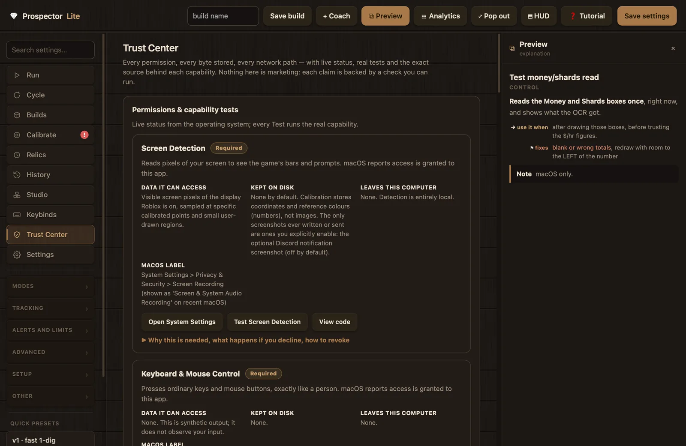
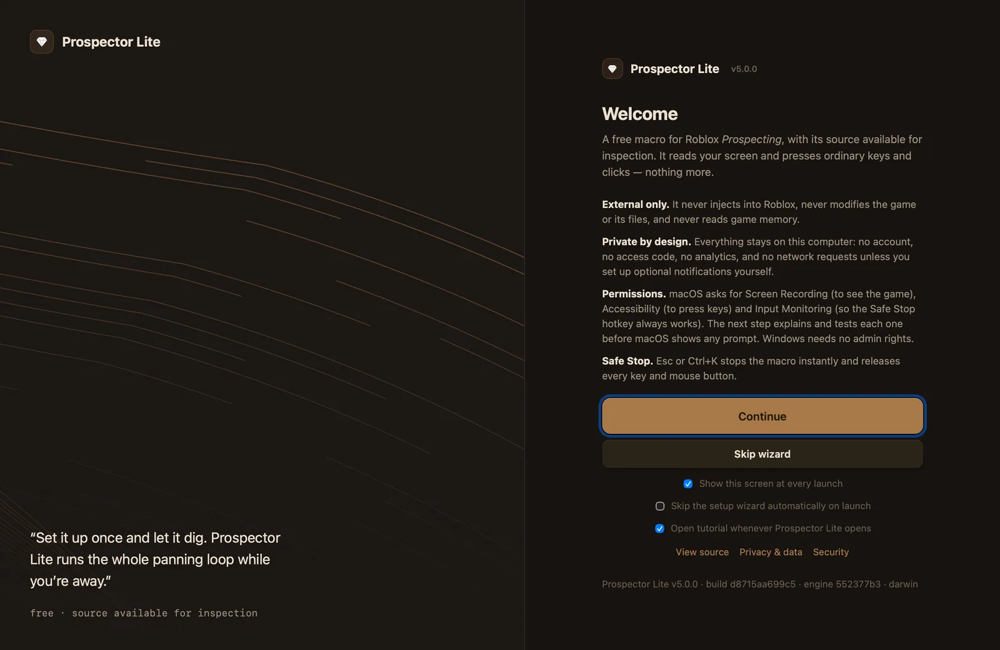

Prospector Lite is an external macro: it reads pixels from your screen and sends ordinary keyboard and mouse input, nothing more. This page covers what each operating system permission is used for, what the Trust Center shows and lets you test, where your data is stored, what the app never does, and how to verify a download before you run it.
0 Windows promptsNo permission model applies; in-app tests prove each capability instead.
0 network requests by defaultThe two network features are opt-in and point at servers you choose.
1 data folderAll local files live in one place, listed in the Trust Center with open, export, and delete actions.
macOS permissions
macOS asks for exactly three permissions, all under System Settings, Privacy & Security. Each maps to a named capability card in the setup wizard and the Trust Center, with a live status pill, a plain explanation, and a test button that runs the real capability.
Capability card
System Settings pane
Used for
Kept on disk
"Screen Detection"
Privacy & Security, then Screen Recording
Reading pixels of the game window: the capacity bar, the dig bar, and the white prompts
Nothing. Calibration stores coordinates and reference colors as numbers, never images.
"Keyboard & Mouse Control"
Privacy & Security, then Accessibility
Pressing ordinary keys and mouse buttons, the same events a person produces
Nothing.
"Safe Stop & Global Hotkeys"
Privacy & Security, then Input Monitoring
Hearing your configured stop chords even while Roblox has focus
Nothing. No keystroke log exists.
Two rules hold anywhere a permission appears in the app:
Status checks never trigger prompts. The app reads permission state through the OS preflight APIs (CGPreflightScreenCaptureAccess, AXIsProcessTrusted, CGPreflightListenEventAccess). A macOS dialog can appear only after you click the clearly labeled "Request access…" button on a card.
Grants apply on the next launch. macOS applies Screen Recording and Input Monitoring grants when the process starts. If a grant lands mid-session, the card reports it as granted with a restart pending and offers a "Restart Prospector Lite" button rather than pretending the capability already works.
The wizard's Trust & Permissions step. The Trust Center tab renders the same cards from the same registry, so the two surfaces can never disagree.
Screen Recording: the "Screen Detection" card
The card's own summary: "Reads pixels of your screen to see the game's bars and prompts." Detection is entirely local; frames are processed in memory and discarded. The only screenshots ever written or sent are ones you explicitly enable later: the optional Discord notification screenshot, which is off by default and separate from the webhook itself.
Newer macOS versions label this pane "Screen & System Audio Recording". The OS label covers more than the app uses: Prospector Lite reads screen pixels only and has no audio-capture code at all.
If you decline: the app opens and all tabs stay usable. Starting a macro is blocked with a clear message, and calibration tests report the denied capture as what it is (black frames) instead of guessing.
The in-app test captures a small center patch of your screen (at most 240 by 150 pixels), reports its size and whether it is blank, shows it once inside the app, then discards it. A black frame usually means the permission is not granted yet or the app needs a restart after granting.
Accessibility: the "Keyboard & Mouse Control" card
The card's summary: "Presses ordinary keys and mouse buttons, exactly like a person." This capability is output only; it does not observe your input. macOS files it under Accessibility because posting events is an assistive-technology API, and granting it does not let the app read your screen or your keystrokes. All stop paths funnel through a release-everything routine, so no key or mouse button can stay held down.
The in-app test posts one harmless letter into the app's own test field and nudges the pointer by 2 pixels. The keystroke is refused unless Prospector Lite is the frontmost app, so switching to another window mid-test types nothing anywhere. A pass requires both the key-down and the key-up to arrive (proving a clean release) plus the pointer movement.
Input Monitoring: the "Safe Stop & Global Hotkeys" card
This permission exists so the panic key always works. The listener waits for your configured control chords; the defaults are Esc (quit), Ctrl+K (start/stop), Ctrl+J (soft stop), and Ctrl+L (pause). In the registry's words: "The listener matches configured chords; it does not log keystrokes, build any buffer of what you type, or transmit anything."
If you decline: starting a macro is blocked, because without the listener the Safe Stop hotkey cannot work, and running without a panic key is not safe.
The in-app test ("Test Safe Stop") arms an 8 second one-shot listener for Esc or Ctrl+K only and reports what it heard. A clean timeout proves nothing and records nothing.
How granting works
Click "Request access…" on the highlighted card, or "Open System Settings", which deep-links to the exact pane for that permission.
Flip the switch for Prospector Lite in System Settings.
Back in the app, the card re-checks on window focus and polls the OS every 2.5 seconds for up to 90 seconds, so the pill updates on its own. There is also a manual check-again button on each card.
If the pill reports that the grant needs a restart, click "Restart Prospector Lite". Screen Recording and Input Monitoring grants take effect at process launch.
Run the card's test. Test results are session-scoped by design: a pass from yesterday is never shown as today's status.
The cards also distinguish "Not requested yet" from "Not granted". A permission macOS has never been asked about is not an error; the card says so and points you at the Request button. And a definitively missing required permission only ever blocks the Start button, never the app itself.
Running from source? macOS attributes these permissions to your terminal or IDE, not to a Prospector Lite app bundle. The app shows a note about this on the trust surfaces when it applies.
If System Settings shows a permission enabled but the in-app test still fails, quit fully (Cmd+Q) and reopen. A replaced app bundle can leave a stale grant pointing at the previous copy; remove the entry with the minus button, then click Request again. See Troubleshooting for the full walkthrough.
Windows
Windows has no permission model for screen capture or synthetic input from desktop apps. There is nothing to grant, and no prompt will appear.
Because the OS has nothing to assert, the app asserts nothing either. The same capability cards appear in the wizard and the Trust Center, but each one stays untested until your own test proves it works; the card text reads "Windows shows no permission prompt for this; run Test to prove it works." The Readiness Check passes a capability on Windows only with "Verified by your own test this session." The wizard's footer puts it plainly: "Windows has no permission prompts here - run the tests to prove everything works."
Other Windows facts worth knowing:
No admin rights. The installer is per-user (no UAC prompt in normal use) and a portable ZIP alternative installs nothing. The Trust Center's Windows view shows the live elevation state: "Running as a normal user (correct)." when things are right.
Hotkeys without hooks. The stop chords are read by polling the specific configured keys every 30 ms (GetAsyncKeyState). No keyboard hook is installed and nothing you type is recorded.
No firewall prompt. The app runs no inbound network listener, so Windows Firewall has nothing to ask about.
No system footprint. No services, drivers, scheduled tasks, or system-wide files are ever installed.
Never run Prospector Lite "as administrator". If Roblox runs elevated and Prospector Lite does not, Windows silently drops the synthetic input; the fix is to run both at the same normal level. Neither needs admin.
A note on testing: the Windows build is produced and tested in CI, but it has not yet been runtime-verified by the developers on a physical Windows machine. The in-app capability tests exist so you can verify it on your own hardware in under a minute. First-launch SmartScreen behavior is covered under Verify your download.
The Trust Center tab
The Trust Center is a permanent tab in the main window, also reachable from the Tutorial menu and the welcome screen. Its own intro sets the standard: "Nothing here is marketing: each claim is backed by a check you can run." The wizard's Trust & Permissions step and this tab render from the same capability registry, so setup and day-to-day status can never drift apart.

The Trust Center tab. Live status from the operating system; each Test runs the real capability.
The tab's nine sections, in order:
Section
What it contains
"Permissions & capability tests"
The live capability cards described below.
"Build identity"
Version, Commit, Built, Platform, Package, Signed, Notarized, and Licence rows.
"Source code"
The repository link, commit-pinned View code buttons, and the expandable trust manifest.
A live table of the app's files with open, export, and delete actions; see Local data files.
"Setup wizard"
"Re-run setup wizard" (re-running deletes nothing) and "Reset wizard progress only", plus the auto-skip and tutorial auto-open toggles.
"Help & troubleshooting"
The searchable local FAQ browser and "Show suppressed warnings again".
"Security reporting"
Private vulnerability reporting, with buttons that open SECURITY.md, PRIVACY.md, and PERMISSIONS.md.
The capability cards
macOS shows 11 cards and Windows shows 10 (Full Disk Access is a macOS-only category). Each card carries a requirement badge ("Required", "Required for a feature", "Optional", "Never requested", or "Info"), a live status pill, a facts block with the exact rows "Data it can access", "Kept on disk", and "Leaves this computer", action buttons, live test output, and an expandable "Why this is needed, what happens if you decline, how to revoke" section. A "View code" button on each card opens the implementing source at the exact commit your build was made from, never a moving branch.
Beyond the three required capabilities, the cards cover "Discord Notifications (optional)" (with a "Preview exact payload" button that renders the request from the same code that would send it), "Coach cloud AI (optional)", and "Sound alerts" (an info card: output-only system sounds that need no permission).
The registry also lists what is never requested, so you can see the app knows those categories exist and does not want them:
Card
Status
Microphone
"Not requested. The app has no audio-capture code." A microphone prompt naming Prospector Lite is a sign of a tampered download; verify your copy's checksum.
Camera
"Not requested, ever."
Location
No location API, no IP-based geolocation, no lookup services. Older private builds phoned a location service; that code was removed before the public release, and tests keep it out.
Administrator / root
"Not required and not recommended." The Windows view adds a live elevation check.
Full Disk Access (macOS)
Not requested. The app reads and writes only its own data folder plus files you pick in open and save dialogs.
Build identity
The "Build identity" section shows Version, Commit, Built, Platform, Package, Signed, Notarized, and Licence rows. On current releases the Signed row reads "no (unsigned build)", and the Licence row states that the code is source-available with no open-source licence chosen yet (the app spells it "Licence"; see LICENSE_CHOICE_REQUIRED.md). In plain terms: the source is available for inspection; no open-source license has been chosen yet, so the code is not licensed for redistribution.
If the Commit row carries the marker "(built from modified source)", the binary was not built from a clean checkout; that marker should never appear on a released build. The "Source code" section below it holds the expandable trust manifest: a JSON list of file, symbol, and exact line range for each capability, generated at build time from the build's own source. A dead reference fails the build.
Local data actions
The "Local data" section names the data folder, notes that nothing is written into the app bundle, and lists each known file with its purpose and size. Its buttons: "Open data folder", "Export calibration", "Export diagnostics", "Delete history", "Delete logs", and "Delete ALL local data…". The delete-all action is double-confirmed ("Really delete everything? The app returns to a fresh first run.") and is scoped to the known files only, never a recursive wipe of anything else. The file inventory itself is documented under Local data files.
Hard boundaries
The Trust Center's "Roblox safety boundary" section states it directly: "Prospector Lite never injects into Roblox, never reads or writes another process's memory, never modifies game files and never intercepts network traffic." It sees pixels and presses ordinary keys, the same boundary a person at the keyboard has.
No injection. No DLL or dylib injection; no code of any kind is loaded into the Roblox process.
No memory reading or writing. No ReadProcessMemory, WriteProcessMemory, or CreateRemoteThread; no ptrace or task_for_pid.
No client modification. Roblox files are never read or written, and its network traffic is never intercepted.
No drivers or services. No kernel extensions, launch agents, privileged helpers, Windows services, or scheduled tasks.
No admin rights. Per-user install on Windows; the app should never run elevated on either platform.
These are enforced claims, not policy statements. Source scans in public_release_tests.py fail the build if any process-memory API appears in the code, and SECURITY.md publishes verification commands you can run against the source yourself. The full boundary write-up with those commands is ROBLOX_SAFETY_BOUNDARY.md.
Two related guarantees: the app never touches the macOS permission (TCC) databases, and it never asks you to disable Gatekeeper, SmartScreen, SIP, or antivirus. Any instruction to do so, from anyone, is a red flag. And a missing required permission only ever blocks the Start button; the app, its settings, and its documentation stay fully usable.
Not affiliated. Prospector Lite is not affiliated with, endorsed by, or supported by Roblox Corporation or the developers of Prospecting. Using automation tools may violate the Roblox Terms of Use and can put your account at risk. External input can still look automated; no macro is "safe" or "undetectable", and Prospector Lite makes no such claim. Use it at your own discretion and risk.
Network behavior
Normal startup and macro use make zero network requests: no update check, no analytics, no telemetry, no IP or location collection, no remote content fetch. The Trust Center's "Network behaviour" section says it in one block: "Normal startup and macro use make ZERO network requests. The only outbound paths are the two optional, off-by-default features above (your own Discord webhook, your own Coach AI key) and links you click. TLS certificate verification can never be disabled. There is no update check, no analytics, no telemetry."
Path
Default
Destination
Notes
Discord webhook
Off
A webhook URL you create and paste in yourself
There is no developer endpoint. One attempt per event, 8 second timeout, verified TLS only. "Preview exact payload" renders the request before you turn anything on. The screenshot attachment is a separate second opt-in (NOTIFY_SCREENSHOT) and is off by default.
Coach AI mode
Off (the Coach defaults to a local, offline rule engine)
The AI provider you pick, with your own API key
The key is stored in a local secrets file, never echoed back to the UI, and never exported. Base URLs must be https://; plain http:// is allowed only for localhost, the local-model case.
Links you click
n/a
Your default browser
The repository, docs, and release pages open in your browser, not inside the app.
TLS certificate verification is mandatory on both paths; there is no insecure fallback, and an endpoint with a bad certificate is treated as an error, never as a reason to weaken checks.
The zero-by-default claim is tested, not asserted: the release test suite runs the app and engine in child processes whose socket functions are replaced with a denier, proving normal use makes no connections. PRIVACY.md even ships a grep command so you can search the source for network call sites yourself, and the complete inventory lives in NETWORK_BEHAVIOR.md. The wizard's Readiness Check reports the live state too: with nothing configured, its "Network defaults" row reads "No network features enabled. Normal use is fully offline."
Local data files
Prospector Lite writes to a single data folder and nowhere else. The engine is pinned to the same folder, so it can never create a second data directory.
Where the folder is
Install type
Data folder
macOS packaged app
~/Library/Application Support/Prospector Lite
Windows installer or portable
%APPDATA%\Prospector Lite
Running from source
Next to the scripts
What each file holds
File
Contents
prospecting_config.json
Settings and calibration: numbers, coordinates, and reference colors. Also holds your webhook URL if you configured one.
prospecting_builds.json
Saved builds (setting presets).
prospecting_scripts.json
The Studio script library.
run_history.json
The last 100 runs with stats, event counts, and stop reasons.
run_logs/
Full per-run engine logs.
prospecting_secrets.json
Local secrets (the Coach API key). Kept out of the config on purpose so it never lands in an exported file; never exported by any app action.
onboarding_state.json
Setup wizard progress.
onboarding.log
Setup wizard and diagnostics action log: operation names, status strings, and error codes only. Rotates once at about 256 KB.
tutorial_state.json
Tutorial viewing history.
tutorial_content.json
Tutorial content overrides.
diagnostics_state.json
Warning suppressions and apply/undo snapshots.
coach_history.json
The Coach chat transcript, capped at the last 120 messages.
prospecting_calib_log.csv
Calibration session log.
instance_id
A random local id for the Prospector Studio handshake; never transmitted.
studio_macro_status.json, studio_push.json
Studio live-status mirror and publish handshake.
.migrated_from_prospectors_plus
One-time migration marker (see below).
The files are plain JSON, protected by ordinary file permissions rather than encryption; the secrets file is additionally created with owner-only permissions. Treat the folder like the rest of your user profile, and never post your config or secrets file publicly: the config can contain your webhook URL, and anyone holding that URL can post to your channel.
One historical note: on first run, a one-time, copy-only migration imports data from an old "Prospectors Plus" folder if one exists. It strips the old private keys, never modifies or deletes the old folder, runs at most once, and the welcome screen reports when it happened.
Deleting and exporting
Use the Trust Center's Local data actions for scoped deletes and exports, or quit the app and delete the folder for complete removal. In PRIVACY.md's words: "That is the entire data footprint; nothing exists anywhere else." Two platform specifics: the Windows uninstaller deliberately keeps the data folder, so delete %APPDATA%\Prospector Lite manually if you want a full wipe; on macOS, removal is drag the app to Trash plus delete the folder, since no launch agents, kernel extensions, or privileged helpers were ever installed.
Diagnostics exports are secret-free by construction: no webhook URL, no API key, no config dump, no screenshots, no keystroke content. They are safe to attach to a GitHub issue.
Verify your download
Official downloads exist in one place: the GitHub release. Builds are currently unsigned on both platforms, so the SHA-256 checksum is the integrity mechanism. The full walkthrough ships as VERIFY_DOWNLOAD.md; the short version follows.
01
Check the SHA-256 checksum
Required
Download the build for your platform and SHA256SUMS.txt from the release page.
macOS, in the download folder: shasum -a 256 -c SHA256SUMS.txt --ignore-missing. To hash one file directly: shasum -a 256 ProspectorLite-5.0.0-macos-arm64.dmg.
Windows, in PowerShell: Get-FileHash .\ProspectorLite-5.0.0-Windows-x64-Setup.exe -Algorithm SHA256, then compare against the matching line in SHA256SUMS.txt. The same command works for the portable ZIP.
Every character must match. A mismatch means the file is not the released build; do not run it.
02
Cross-check the build identity in the app
Required
Open the Trust Center's "Build identity" section. The same version and commit also appear on the welcome screen's build line.
The Version row must read 5.0.0 and the Commit must match the one shown on the release page.
The marker "(built from modified source)" must not appear on a released build.

The welcome screen carries the same version and commit as the Trust Center.
03
Get past the unsigned-build warnings safely
Required
A checksum proves which binary you have; a signature would prove who built it. Until code signing lands, both operating systems warn on first launch:
macOS Gatekeeper: after the checksum matches, right-click the app, choose Open, then Open again. Never disable Gatekeeper.
Windows SmartScreen ("Windows protected your PC"): after the checksum matches, choose More info, then Run anyway. SmartScreen is a reputation warning, not a malware verdict. Never disable SmartScreen or your antivirus, and never trust software that tells you to.
When real signing ships, the Trust Center's Signed and Notarized rows flip to yes; the checksum process stays the same.
04
Tie the binary to the source
Optional
Expand the trust manifest in the Trust Center's "Source code" section: file, symbol, and line range for each capability, generated from the exact source of your build.
Click any "View code" button; it opens the repository pinned to the build commit, so what you read is what you run.
Treat any of these as a stop sign: a checksum mismatch; a version or commit that does not match the release; the app asking for anything on the never-requested list (a microphone prompt naming Prospector Lite means verify your copy); or any instruction to disable Gatekeeper, SmartScreen, or antivirus.
Common questions
Why does macOS ask for three permissions?
Screen Recording reads the game pixels, Accessibility sends the clicks and keys, and Input Monitoring lets the Esc Safe Stop work even while Roblox has focus. Each is explained and testable in the Trust Center; a system prompt can appear only after you click a Request button, and a missing permission blocks the Start button, never the app.
Does it collect my IP address or location?
No. Default network activity is zero requests: no update checks, no analytics, no telemetry, no IP or location collection. The only network-capable paths are opt-in and point at servers you choose: your own Discord webhook and the Coach's bring-your-own-key AI mode.
Is Prospector Lite open source?
The complete source can be read at github.com/ProspectorsPlus/Prospecting-Auto-Pan, and each Trust Center capability links to the exact file and line behind it. It is source available for inspection; no open-source license has been chosen yet, so the code is not licensed for redistribution.
Why does Windows SmartScreen warn about the download?
The builds are not Authenticode-signed yet, so SmartScreen has no reputation for them. Verify the SHA-256 checksum against the release's SHA256SUMS.txt, then choose More info and Run anyway. Never disable SmartScreen, and never trust software that tells you to.
Can my account still get banned?
Yes, possibly. External input can still look automated, and automation may violate the Roblox Terms of Use. Prospector Lite makes no claim of undetectability and no account-safety promises. Use it at your own discretion and risk.
How do I delete all of my data?
Trust Center, "Local data", then "Delete ALL local data…" (double-confirmed, scoped to the app's known files only). Or quit the app and delete the data folder yourself; that is the entire footprint. On Windows, remember the uninstaller keeps the data folder, so delete %APPDATA%\Prospector Lite manually.